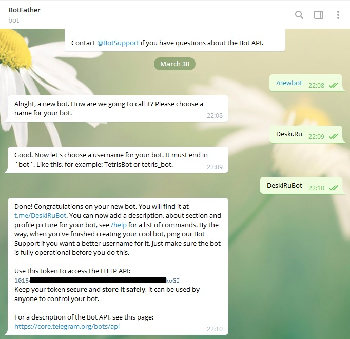
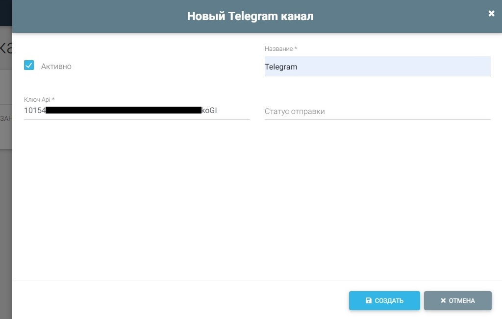
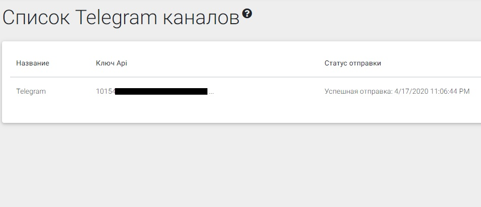
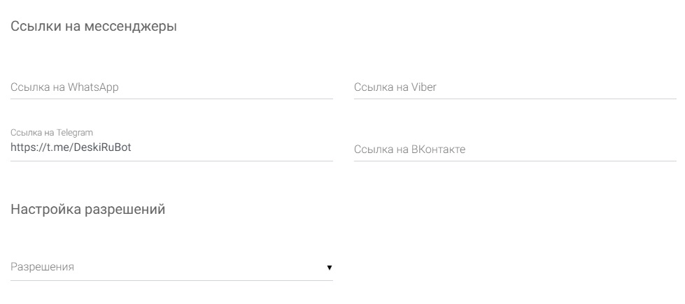
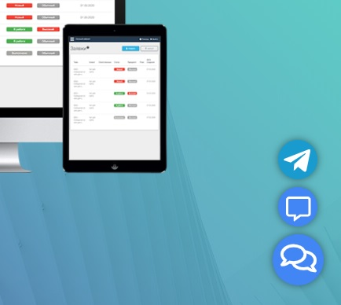

Интеграция с Telegram
1. Регистрация Telegram бота
2. Ссылка на Telegram бот
Регистрация Telegram бота
Для интеграции необходимо создать бота в Telegram, получить ключ API и ввести в личном кабинете.
- Откройте Telegram, найдите пользователя с имененм @botfather и начните чат с ним.
- Отправьте сообщение с текстом /newbot
- Введите отображаемое имя бота
- Укажите логин бота. Он должно заканчиваться на 'bot'
- После успешного создания бота вам придет сообщение. Необходимо скопировать ключ доступа.

Создание канала в личном кабинете Deski.ru
Создайте новый канал.
- Укажите произвольное имя, которое будет отображаться в левом меню.
- Вставьте ключ Api, созданный в шаге выше.
- Сохраните канал. Теперь канал настроен для приема/отправки сообщений.

Проверка работоспособности канала
- Для проверки канала найдате ваш бот в Telegram по логину, указанному при регистрации, и напишите сообщение.
- В разделе Заявки должно появится новое обращение. Напишите сообщение в личном кабинете Deski.ru
- Перейдите в раздел Telegram каналы. При упешной отправке сообщения отобразится текст об успешной отправке.

Ссылка на Telegram бот
Как рассказать пользователем о вашем канале?
- Укажите логин бота вашим пользователям, напрмер на сайте компании.
- Так же вы можете указать ссылку, вида Tg://resolve?domain=логинбота, например DeskiRuBot. При переходе по указнной ссылке будет открываться приложение Telegram.
- Чат для сайта Deski.ru поддерживает размещение ссылки на канал в Telegram. Укажете в поле Ссылка на Telegram ссылку на ваш канал вида Tg://resolve?domain=логинбота

